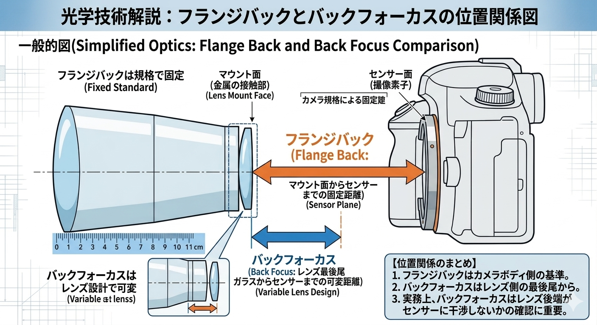
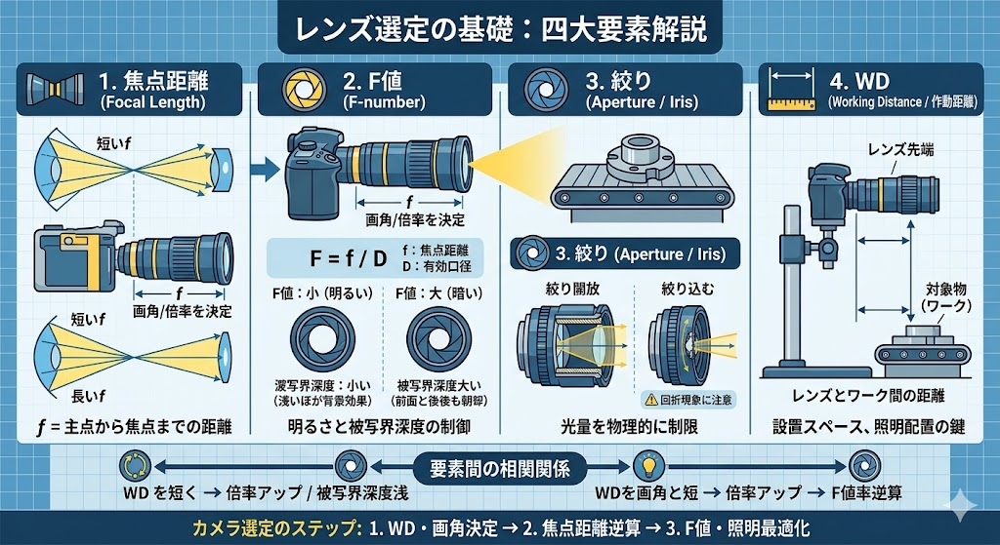

※ 生成した focus.png をこの HTML と同じフォルダに保存してください。
レンズの役割は、光を一点に集める（フォーカスする）ことです。光は異なる物質（空気とガラス、あるいは液体）の境界を通る際、その速度差によって進む方向が変わります。これが「屈折」です。
屈折する角度は、レンズ表面の「曲率（形状）」によって決まります。従来のレンズはガラスを削ってこの形状を固定しますが、液体レンズはこれを「動的」に変化させます。
レンズが膨らむほど、光は強く曲げられ、焦点距離は短くなります。
異なる屈折率を持つ2つの液体界面が、ガラスレンズの表面と同じ役割を果たします。
この「界面のカーブ」を電気的に制御するのがエレクトロウェッティング技術です。
レンズは「屈折」を利用して光の進む方向を自在に制御し、空間上の光情報を特定の点や面に再構成、あるいは整列させるデバイスです。その物理的な役割は、大きく分けて3つあります。
広範囲の平行光を屈折により一点（焦点）に集め、光のエネルギー密度を高める機能。
物体から放射された光を、再び対応する点へと収束させ、センサー上に元の形を再現する機能。
焦点距離や WD を変えることで、撮影される像の範囲（広角・望遠）や倍率を決定する機能。

図：レンズによる光束の制御（クリックで拡大）
絞りを開くと集光力は上がるが、ピントの合う奥行き（被写界深度：DoF）は極端に浅くなる。
絞り込むとDoFは広がるが、集光力が低下し像が暗くなる。光量不足によるシャッタースピードの低下を招く。
撮影距離が近づくほど倍率は上がるが、DoFは驚くほど浅くなり、微細な凹凸へのピント合わせが困難になる。
固定された形状のガラスレンズでは、これらの設定を物理的に動かす（モーター駆動）か、レンズを交換（レトロフィット）しなければ、新たな検査価値は創造できません。
光学設計とマシンビジョンのための必須知識

レンズの主点から焦点までの距離。写る範囲を決めます。
レンズの明るさを示す指標。光の入り口の大きさを数値化。
物理的に光量を制限する機構。F値を制御するために使います。
レンズ先端から対象物（ワーク）までの作動距離。
設計精度を高めるフランジバックの理解と実務フロー

※ 生成した focus.png をこの HTML と同じフォルダに保存してください。
マウント面からセンサーまでの固定距離。0.01mmの精度が無限遠ピントに影響します。
| 規格 | 距離 (mm) |
|---|---|
| Cマウント | 17.526 |
| CSマウント | 12.526 |
| Sony E | 18.000 |
| Nikon F | 46.500 |
混同されやすいですが、以下の違いを区別することが設計ミスを防ぎます。